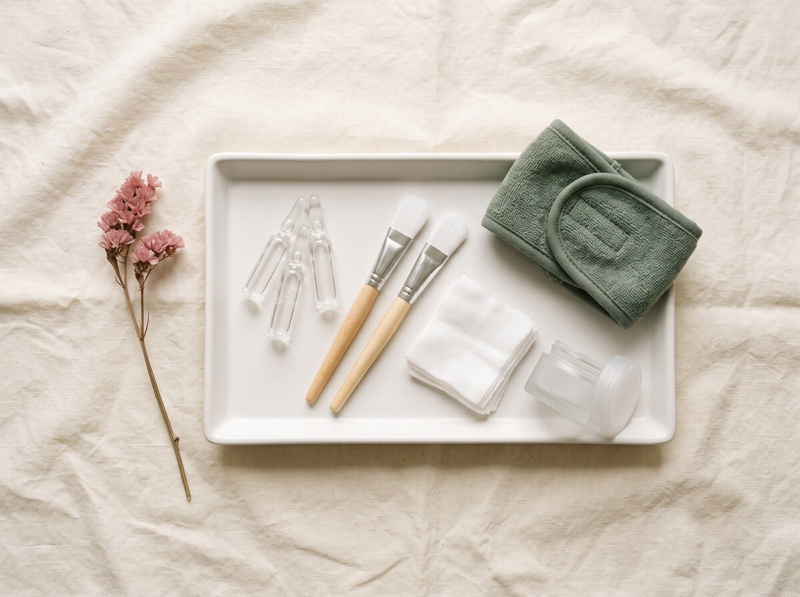

Depilación láser en Badajoz: todo lo que debes saber antes de tu primera sesión
Cómo prepararte para tu primera sesión de depilación láser en Badajoz, cuántas sesiones necesitas, cuidados posteriores y la mejor época para empezar.
Leer artículo
Estética, cuidado de la piel y nutrición explicados sin tecnicismos por el equipo de DietaStética, en Badajoz.
Cómo prepararte para tu primera sesión de depilación láser en Badajoz, cuántas sesiones necesitas, cuidados posteriores y la mejor época para empezar.
Leer artículoLa piel refleja lo que comes. Te contamos qué nutrientes y alimentos ayudan a mantener un cutis hidratado, firme y luminoso, y qué hábitos conviene evitar.
Leer artículoQué es el HIFU facial, cómo actúa sobre la flacidez, qué se siente durante la sesión, cuándo se ven los resultados y para quién está indicado.
Leer artículoCuéntanos qué te gustaría mejorar y te proponemos el plan que mejor encaja contigo, sin compromiso. Edificio Eurodom, Badajoz.